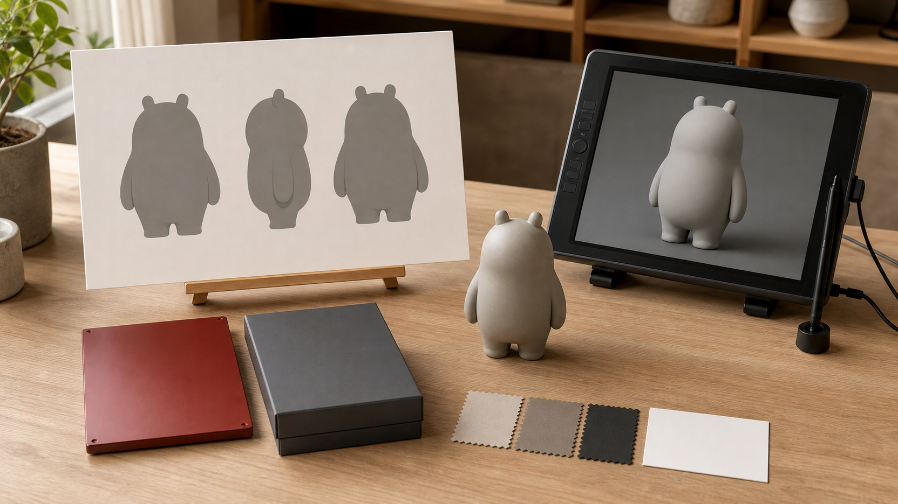
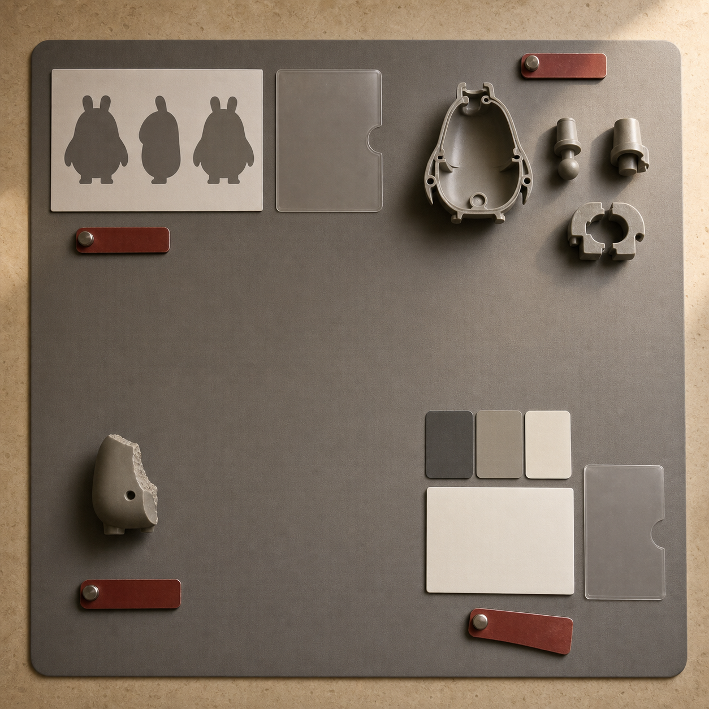
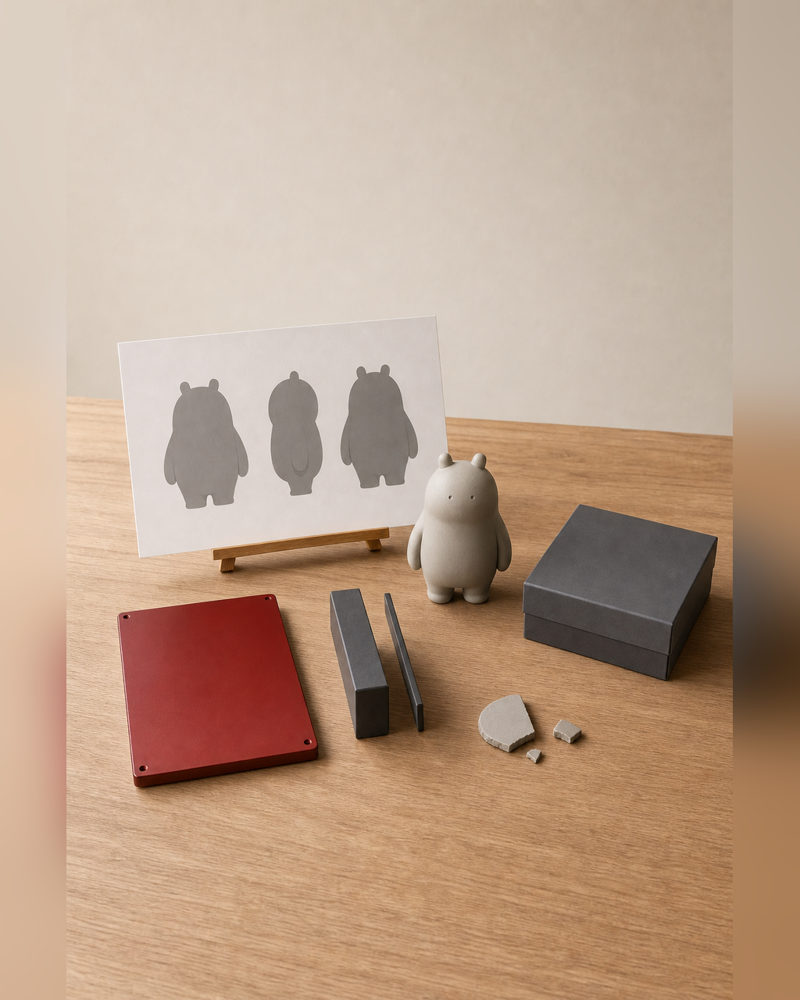

四个质量闸口，保证项目不一路带病往后走
一个项目从方向图进入三维、打印、涂装和发布后，前一阶段留下的小问题会迅速变贵。视觉输入里的背面缺失，可能在初模阶段变成猜测；模型里的薄片或悬空连接，可能到切片或取件时才断裂；灰模暴露的重心问题，如果没有停下来修正，又会被带进涂装、拍摄和页面说明。 四个质量闸口要解决的不是“流程看起来完整”，而是每次进入下一阶段前都回答三个问题：当前输入和证据是否足够，哪些问题必须退回修正，下一阶段具体读取哪个受控版本。若闸口只剩一句“看过了”，项目仍会一路带病推进，返工范围和事实风险都会扩大。

具体问题
一个项目从方向图进入三维、打印、涂装和发布后，前一阶段留下的小问题会迅速变贵。视觉输入里的背面缺失，可能在初模阶段变成猜测；模型里的薄片或悬空连接，可能到切片或取件时才断裂；灰模暴露的重心问题，如果没有停下来修正，又会被带进涂装、拍摄和页面说明。
四个质量闸口要解决的不是“流程看起来完整”，而是每次进入下一阶段前都回答三个问题：当前输入和证据是否足够，哪些问题必须退回修正，下一阶段具体读取哪个受控版本。若闸口只剩一句“看过了”，项目仍会一路带病推进，返工范围和事实风险都会扩大。
核心判断
质量闸口是一项停止与放行机制，不是打勾仪式。每道 Gate 都必须留下可复核的输入、检查证据和决定：通过后写明获准进入的下一任务；待修时写明问题、责任版本和复检条件；需要降级时写明新的尺寸、结构或成果出口。没有证据和版本关系，就不能算通过。
四道闸口检查的对象各不相同。Gate 1 检查项目范围、版权状态、视觉与结构输入；Gate 2 检查受控模型以及真实尺度下的封闭、厚度、连接、重心、拆件和支撑；Gate 3 用灰模或局部样检查结构、装配与细节；Gate 4 核对涂装状态、包装方向、产品信息、图片、版权和成果描述是否一致。后一道 Gate 不能替前一道补票。
步骤或标准
可把每道闸口统一记录为“输入—检查—决定—下一版本”四栏，并用下面四项执行。每项都必须能找到文件、实物或记录，不能只保留口头结论。
- Gate 1｜范围与输入：核对主要用途、预计尺寸、版权状态、正侧背与材质参考、遮挡和悬空结构，以及主方案、备选方案、降级方案；缺少关键视图或公开边界不清时，记录待补项，不进入三维生成。
- Gate 2｜模型与制造：打开受控源模型，在真实毫米尺度检查网格封闭、最小厚度、连接面积、重心、底座、拆件、定位和支撑空间；保存 GLB / STL 版本及切片检查记录，任何关键结构未通过都退回修模。
- Gate 3｜实体验证：用灰模、局部样或小尺寸样检查断裂、变形、细节丢失、重心和装配；逐项记录现象与修正建议，再决定继续涂装、保留灰模或缩小为局部出口。
- Gate 4｜发布一致性：逐一比对当前模型、涂装状态、包装方向、说明卡、照片和网页描述；核对名称、版本、尺寸、材质、作者、版权与完成状态，任何不一致都先修正文档或素材，再进入 Day 5 数字发布。
常见错误
以下错误会让闸口失去止损作用，并把本来局部的问题扩大到后续环节。
- 把 Gate 当成进度汇报，只写“已检查”而不附文件、样件、版本和问题记录；后果是下一阶段无法确认读取对象，返工时也找不到问题从哪一版开始。
- 发现薄片、重心或装配问题仍先去打印、涂装或拍摄；后果是结构缺陷进入材料和时间成本更高的阶段，已经完成的表面工作可能全部作废。
- 用渲染图或屏幕截图代替切片与实体验证；后果是封闭、厚度、支撑、取件和装配风险被隐藏，直到真实制造时才暴露。
- 为了保持原计划而拒绝备选或降级方案；后果是有限排程被单个复杂问题占用，最终可能连可核验的局部样和问题记录都无法形成。
- Gate 4 只看图片是否好看，不核对版权、版本和完成状态；后果是灰模、方向稿或包装草稿可能被误写成正式商品或已完成成果。
与五天课程的关系
四道闸口贯穿五天课程。Day 1 以 Gate 1 锁定方向、版权、视觉输入、尺寸和主 / 备 / 降级方案；通过后进入 Day 2 的 AI 三维初模与 Nomad 人工修模。Day 2 以 Gate 2 完成可打印检查，并分别保存网页展示用 GLB 与制造用 STL；通过后进入 Day 3 的切片、打印和灰模验证。
Day 3 以 Gate 3 决定继续涂装、保留灰模还是退回修正；通过的真实状态进入 Day 4 的涂装、包装方向、说明卡与素材归档。Day 4 以 Gate 4 核对信息、版权、图片和成果描述；完成后才进入 Day 5，把当前受控成果整理进个人独立站、GLB 在线展示、平台文案和 30 天推广计划。
事实 / 案例 / 完成度边界
本文依据课程公开的五天安排与四个 Gate 检查项整理。当天计划的四张图片仅用于示意范围检查、结构退回、实体验证和发布一致性，不是学员案例、真实委托项目，也不代表课堂、打印、涂装或发布已经发生。真实案例只有在来源、授权、版本和完成状态可核验时才能单独标注；示意图不能替代真实案例。
五天内的目标是形成第一版可继续发展的项目闭环，并用 Gate 证据决定通过、退回或降级。具体完成度受起点、结构复杂度、尺寸、设备、材料、打印排程和修正次数影响。课程不承诺人人完成商业级精修、一次打印成功、正式包装印刷、批量生产、正式展览、授权成交或销售，也不承诺所有项目得到相同数量、尺寸或精度的实体样。
报名入口
如果你已有 IP / 角色资产，可以提交现有原画、角色设定或三维文件，并说明版权状态、希望保留的辨识点、实体用途和目前最担心的结构问题；课程会从 Day 1 的 Gate 1 重新核对范围，而不是默认现有资料已经能直接制造。
如果你只有想法、草图或初步设定，也可以如实说明故事、关键词、参考方向、希望做成的物品和现有设备。两类起点进入同一条五天生产链，并按四道 Gate 决定继续、修正或降级。公开报名地址：https://wj.qq.com/s2/27296919/9499/


长期招生｜青岛｜3–5 天短训｜评估后预约跟班｜每班最多 10 人。查看当前学习方案与费用
填写报名资料 →